Last updated: 2026-01-24
Checks: 7 0
Knit directory: yap1_meox1_paper/
This reproducible R Markdown analysis was created with workflowr (version 1.7.1). The Checks tab describes the reproducibility checks that were applied when the results were created. The Past versions tab lists the development history.
Great! Since the R Markdown file has been committed to the Git repository, you know the exact version of the code that produced these results.
Great job! The global environment was empty. Objects defined in the global environment can affect the analysis in your R Markdown file in unknown ways. For reproduciblity it’s best to always run the code in an empty environment.
The command set.seed(20260119) was run prior to running
the code in the R Markdown file. Setting a seed ensures that any results
that rely on randomness, e.g. subsampling or permutations, are
reproducible.
Great job! Recording the operating system, R version, and package versions is critical for reproducibility.
Nice! There were no cached chunks for this analysis, so you can be confident that you successfully produced the results during this run.
Great job! Using relative paths to the files within your workflowr project makes it easier to run your code on other machines.
Great! You are using Git for version control. Tracking code development and connecting the code version to the results is critical for reproducibility.
The results in this page were generated with repository version 152890c. See the Past versions tab to see a history of the changes made to the R Markdown and HTML files.
Note that you need to be careful to ensure that all relevant files for
the analysis have been committed to Git prior to generating the results
(you can use wflow_publish or
wflow_git_commit). workflowr only checks the R Markdown
file, but you know if there are other scripts or data files that it
depends on. Below is the status of the Git repository when the results
were generated:
Ignored files:
Ignored: .DS_Store
Ignored: .Rhistory
Ignored: .Rproj.user/
Ignored: code/pre_processing/
Ignored: data/.DS_Store
Ignored: data/genesets/
Ignored: data/input/
Ignored: output/data/
Ignored: renv/library/
Ignored: renv/staging/
Unstaged changes:
Modified: .gitignore
Modified: renv.lock
Note that any generated files, e.g. HTML, png, CSS, etc., are not included in this status report because it is ok for generated content to have uncommitted changes.
These are the previous versions of the repository in which changes were
made to the R Markdown
(analysis/pre_processing_D10025_yap1_dataset_makeObject_Level01.Rmd)
and HTML
(docs/pre_processing_D10025_yap1_dataset_makeObject_Level01.html)
files. If you’ve configured a remote Git repository (see
?wflow_git_remote), click on the hyperlinks in the table
below to view the files as they were in that past version.
| File | Version | Author | Date | Message |
|---|---|---|---|---|
| Rmd | 152890c | Michelle Meier | 2026-01-24 | wflow_publish(c("analysis/pre_processing_D10025_yap1_dataset_makeObject_Level01.Rmd")) |
Making Level 01 object for yap1 dataset.
Load libraries
suppressPackageStartupMessages({
library(tidyverse)
library(here)
library(Seurat)
library(scDblFinder)
library(ggpubr)
library(clustree)
library(patchwork)
library(scater)
library(scran)
library(qs2)
})List of ribosomal and globin genes that we’re going to remove
ribo_genes <- read.table(here("data/genesets/DR_ribosomal_globin_genes.csv"), sep="\t", stringsAsFactors=FALSE)plot_sizing <- theme_bw()+ theme(axis.title = element_text(size = 16),
axis.text = element_text(size = 14, colour = "black"),
plot.title = element_text(size = 18),
legend.text = element_text(size = 14),
legend.title = element_blank())
rotate_x <- theme(axis.text.x = element_text(angle = 90, vjust = 0.5, hjust=1))
strip_fix <- theme(strip.background = element_rect(fill = "white"),
strip.text = element_text(size = 14))Read in 10X outputs.
S20127 = yap1 mutant
S20128 = wildtype
yap1_object <- Read10X(here("data/input/S20127/filtered_feature_bc_matrix"))
wt_object <- Read10X(here("data/input/S20128/filtered_feature_bc_matrix"))Remove ribo and globin genes
yap1_object <- yap1_object[!rownames(yap1_object) %in% ribo_genes$gene_name,]
wt_object <- wt_object[!rownames(wt_object) %in% ribo_genes$gene_name,]yap1_seurat <- CreateSeuratObject(counts=yap1_object,
project = "S20127",
min.cells = 5)Warning: Feature names cannot have underscores ('_'), replacing with dashes
('-')#add genotype
yap1_seurat$Genotype <- "yap1_mutant"
wt_seurat <- CreateSeuratObject(counts=wt_object,
project = "S20128",
min.cells = 5)Warning: Feature names cannot have underscores ('_'), replacing with dashes
('-')wt_seurat$Genotype <- "wildtype"Combine them into list to use lapply later.
list_objects <- list(yap_mutant = yap1_seurat,
wt = wt_seurat)Clean up
rm(yap1_object, yap1_seurat, wt_object, wt_seurat, ribo_genes); gc() used (Mb) gc trigger (Mb) limit (Mb) max used (Mb)
Ncells 11981902 640.0 20214541 1079.6 NA 16264587 868.7
Vcells 125764289 959.6 391223134 2984.8 49152 382919376 2921.5list_objects <- lapply(list_objects, function(seurat){
seurat$`percent.mt` <- PercentageFeatureSet(seurat,
pattern = "^[mtMtMT-]")
return(seurat)
})Make function for density plots and correlation plots
make_density_plots <- function(seurat){
plot_list <- list()
#ncount
plot_list[[1]] <- ggplot(seurat@meta.data, aes(x=log10(nCount_RNA))) +
geom_histogram(aes(y=..density..), colour="black", fill="white")+
geom_density(alpha=.2, fill="#FF6666")+ xlab('log10(count)') +
plot_sizing + ggtitle(sprintf("Library size, %s", seurat@project.name))
#nfeat
plot_list[[2]] <- ggplot(seurat@meta.data, aes(x=log10(nFeature_RNA))) +
geom_histogram(aes(y=..density..), colour="black", fill="white")+
geom_density(alpha=.2, fill="#FF6666")+ xlab('log10(nfeature)') +
plot_sizing + ggtitle(sprintf("#features, %s", seurat@project.name))
#mito
plot_list[[3]] <- ggplot(seurat@meta.data, aes(x=percent.mt)) +
geom_histogram(aes(y=..density..), colour="black", fill="white")+
geom_density(alpha=.2, fill="#FF6666")+ xlab('percent.mt') +
plot_sizing + ggtitle(sprintf("mito, %s", seurat@project.name))
return(plot_list)
}
make_correlation_plots <- function(seurat){
plot_list <- list()
meta <- seurat@meta.data %>%
mutate(., log10ncount = log10(nCount_RNA),
log10nfeat = log10(nFeature_RNA))
#ncount
plot_list[[1]] <- ggscatter(meta, x = "log10ncount", y = "log10nfeat",
add = "reg.line",
conf.int = TRUE,
add.params = list(color = "red4",
fill = "lightgray")) +
plot_sizing + ylab("log10(#features)") + xlab("log10(nCount)") +
stat_cor(method = "pearson", label.x = 2.5, label.y = 4, size = 5) +
ggtitle(sprintf("Lib size vs #features, %s", seurat@project.name))
#nfeat
plot_list[[2]] <- ggscatter(meta, x = "log10ncount", y = "percent.mt",
add = "reg.line",
conf.int = TRUE,
add.params = list(color = "red4",
fill = "lightgray")) +
plot_sizing + ylab("%mito") + xlab("log10(nCount)") +
stat_cor(method = "pearson", label.x = 3.5, label.y = 80, size = 5) +
ggtitle(sprintf("Lib size vs mito, %s", seurat@project.name))
#mito
plot_list[[3]] <- ggscatter(meta, x = "log10nfeat", y = "percent.mt",
add = "reg.line",
conf.int = TRUE,
add.params = list(color = "red4",
fill = "lightgray")) +
plot_sizing + ylab("%mito") + xlab("log10(#features)") +
stat_cor(method = "pearson", label.x = 3.5, label.y = 80, size = 5) +
ggtitle(sprintf("#features vs mito, %s", seurat@project.name))
return(plot_list)
}Density plots
plot_list <- lapply(list_objects, make_density_plots)
wrap_plots(unlist(plot_list, recursive = F)) + plot_layout(axis_titles = "collect")Warning: The dot-dot notation (`..density..`) was deprecated in ggplot2 3.4.0.
ℹ Please use `after_stat(density)` instead.
This warning is displayed once every 8 hours.
Call `lifecycle::last_lifecycle_warnings()` to see where this warning was
generated.`stat_bin()` using `bins = 30`. Pick better value `binwidth`.
`stat_bin()` using `bins = 30`. Pick better value `binwidth`.
`stat_bin()` using `bins = 30`. Pick better value `binwidth`.
`stat_bin()` using `bins = 30`. Pick better value `binwidth`.
`stat_bin()` using `bins = 30`. Pick better value `binwidth`.
`stat_bin()` using `bins = 30`. Pick better value `binwidth`.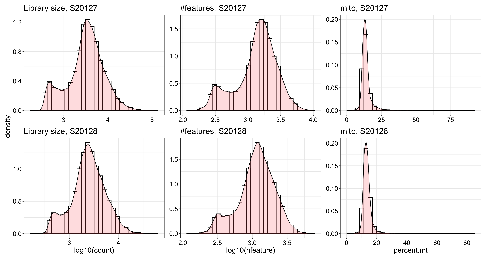
Small hump, still reasonably large library size there though.
plot_list <- lapply(list_objects, make_correlation_plots)
wrap_plots(unlist(plot_list, recursive = F)) 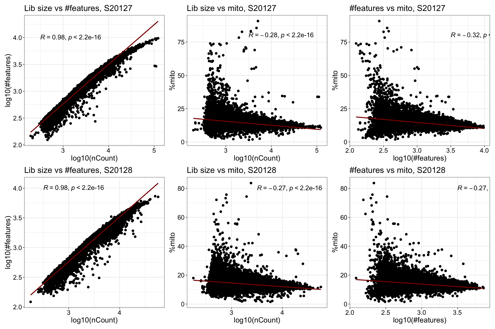
Using scDblFinder. No QC before running this as recommended.
run_scDblFinder <- function(seurat){
sce <- as.SingleCellExperiment(seurat) #convert
sce <- logNormCounts(sce) %>% #run steps
runPCA() %>%
runUMAP()
set.seed(1997)#for reproducibility
sce <- scDblFinder(sce, clusters = T) #run scDblFinder with clusters
#add to seurat
seurat$scDblFinder.class <- sce$scDblFinder.class #actual label
seurat$scDblFinder.cxds_score <- sce$scDblFinder.cxds_score #co-expression score
return(seurat)
}Run
list_objects <- lapply(list_objects, run_scDblFinder)Warning: Layer 'data' is emptyWarning: Layer 'scale.data' is emptyWarning in .checkSCE(sce, coerce = is.null(samples)): Some cells in `sce` have
an extremely low read counts; note that these could trigger errors and might
best be filtered outClustering cells...13 clustersCreating ~15348 artificial doublets...Dimensional reductionEvaluating kNN...Training model...iter=0, 3051 cells excluded from training.iter=1, 3048 cells excluded from training.iter=2, 3048 cells excluded from training.Threshold found:0.2453967 (20.7%) doublets calledWarning: Layer 'data' is emptyWarning: Layer 'scale.data' is emptyWarning in .checkSCE(sce, coerce = is.null(samples)): Some cells in `sce` have
an extremely low read counts; note that these could trigger errors and might
best be filtered outWarning in scDblFinder(sce, clusters = T): You are trying to run scDblFinder on
a very large number of cells. If these are from different captures, please
specify this using the `samples` argument.TRUEClustering cells...12 clustersCreating ~22336 artificial doublets...Dimensional reductionEvaluating kNN...Training model...iter=0, 3897 cells excluded from training.iter=1, 3865 cells excluded from training.iter=2, 3865 cells excluded from training.Threshold found:0.3826072 (21.7%) doublets calledAround 20% doublets, predicted. 10X doublet rate is 0.008 per 10k.
#expected doublet rate
(ncol(list_objects$yap_mutant)* 0.008)/1000[1] 0.15348(ncol(list_objects$wt)* 0.008)/1000[1] 0.22336#observed
table(list_objects$yap_mutant$scDblFinder.class)/ncol(list_objects$yap_mutant)
singlet doublet
0.7932239 0.2067761 table(list_objects$wt$scDblFinder.class)/ncol(list_objects$wt)
singlet doublet
0.7825215 0.2174785 Slightly higher than expected for mutant. Importantly, this is a timepoint (2dpf) where cells are transitioning between celltypes and may be co-expressing genes which could through it off.
Library size and nFeature difference between doublets and singlet:
run_metrics_dbl <- function(seurat){
plot_list <- list()
plot_list[[1]] <- seurat@meta.data %>%
ggplot(., aes(y = log10(nCount_RNA), x = scDblFinder.class)) +
geom_boxplot()+ plot_sizing + ylab("log10(count)") + xlab("") +
ggtitle(seurat$Genotype)
plot_list[[2]] <- seurat@meta.data %>%
ggplot(., aes(y = log10(nFeature_RNA), x = scDblFinder.class)) +
geom_boxplot()+ plot_sizing + ylab("log10(features)") + xlab("") +
ggtitle(seurat$Genotype)
return(plot_list)
}plot_list <- lapply(list_objects, run_metrics_dbl)
wrap_plots(unlist(plot_list, recursive = F)) 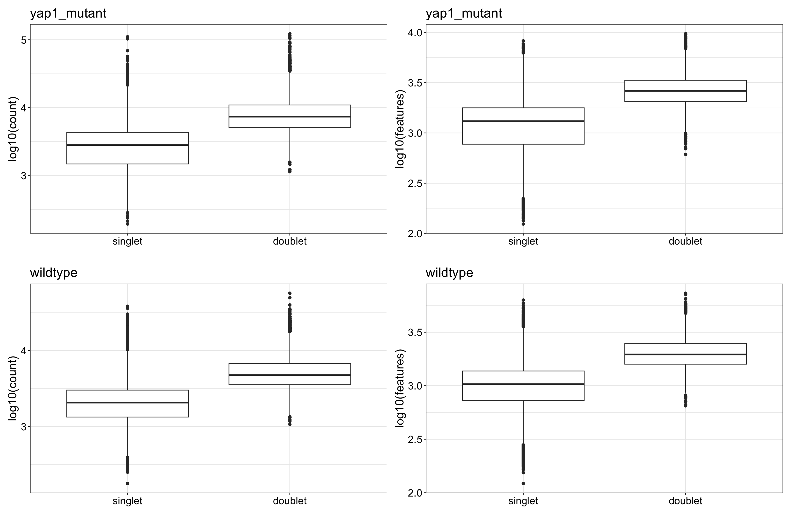
%mito: Fixed threshold 20%
Library size: nmads 2, lower and higher
nFeatures: nmads 2, lower and higher
Get library size threshold for each sample - lower bound
#yap mutant
lib_size_outliers_low <- isOutlier(list_objects$yap_mutant$nCount_RNA, type = "lower", nmads = 2, log = T)
lib_size_outliers_low %>% sum()[1] 1848summary(list_objects$yap_mutant$nCount_RNA[lib_size_outliers_low]) Min. 1st Qu. Median Mean 3rd Qu. Max.
193.0 420.0 483.5 492.8 561.0 675.0 #wildtype
lib_size_outliers_low <- isOutlier(list_objects$wt$nCount_RNA, type = "lower", nmads = 2, log = T)
lib_size_outliers_low %>% sum()[1] 1796summary(list_objects$wt$nCount_RNA[lib_size_outliers_low]) Min. 1st Qu. Median Mean 3rd Qu. Max.
178.0 424.0 476.0 478.9 536.0 602.0 Very similar
Upper bound ncounts
#yap mutant
lib_size_outliers_upper <- isOutlier(list_objects$yap_mutant$nCount_RNA, type = "higher", nmads = 2, log = T)
lib_size_outliers_upper %>% sum()[1] 582summary(list_objects$yap_mutant$nCount_RNA[lib_size_outliers_upper]) Min. 1st Qu. Median Mean 3rd Qu. Max.
16866 19410 22680 27725 29804 122576 list_objects$yap_mutant$scDblFinder.class[lib_size_outliers_upper] %>% table().
singlet doublet
166 416 #wildtype
lib_size_outliers_upper <- isOutlier(list_objects$wt$nCount_RNA, type = "higher", nmads = 2, log = T)
lib_size_outliers_upper %>% sum()[1] 863summary(list_objects$wt$nCount_RNA[lib_size_outliers_upper]) Min. 1st Qu. Median Mean 3rd Qu. Max.
10069 11100 12831 14368 15336 56951 list_objects$wt$scDblFinder.class[lib_size_outliers_upper] %>% table().
singlet doublet
327 536 Combined
#yap mutant
lib_size_outliers_combined <- isOutlier(list_objects$yap_mutant$nCount_RNA, type = "both", nmads = 2, log = T)
lib_size_outliers_combined %>% sum()[1] 2430#wildtype
lib_size_outliers_combined <- isOutlier(list_objects$wt$nCount_RNA, type = "both", nmads = 2, log = T)
lib_size_outliers_combined %>% sum()[1] 2659#yap mutant
lib_size_outliers_low <- isOutlier(list_objects$yap_mutant$nFeature_RNA, type = "lower", nmads = 2, log = T)
lib_size_outliers_low %>% sum()[1] 2268summary(list_objects$yap_mutant$nFeature_RNA[lib_size_outliers_low]) Min. 1st Qu. Median Mean 3rd Qu. Max.
124.0 284.0 328.0 331.3 382.0 460.0 #wildtype
lib_size_outliers_low <- isOutlier(list_objects$wt$nFeature_RNA, type = "lower", nmads = 2, log = T)
lib_size_outliers_low %>% sum()[1] 2175summary(list_objects$wt$nFeature_RNA[lib_size_outliers_low]) Min. 1st Qu. Median Mean 3rd Qu. Max.
122.0 285.0 319.0 318.4 358.0 407.0 Upper bound ncounts
#yap mutant
lib_size_outliers_upper <- isOutlier(list_objects$yap_mutant$nFeature_RNA, type = "higher", nmads = 2, log = T)
lib_size_outliers_upper %>% sum()[1] 305summary(list_objects$yap_mutant$nFeature_RNA[lib_size_outliers_upper]) Min. 1st Qu. Median Mean 3rd Qu. Max.
4888 5161 5512 5867 6215 9713 list_objects$yap_mutant$scDblFinder.class[lib_size_outliers_upper] %>% table().
singlet doublet
82 223 #wildtype
lib_size_outliers_upper <- isOutlier(list_objects$wt$nFeature_RNA, type = "higher", nmads = 2, log = T)
lib_size_outliers_upper %>% sum()[1] 486summary(list_objects$wt$nFeature_RNA[lib_size_outliers_upper]) Min. 1st Qu. Median Mean 3rd Qu. Max.
3466 3676 3923 4123 4354 7313 list_objects$wt$scDblFinder.class[lib_size_outliers_upper] %>% table().
singlet doublet
125 361 Combined
#yap mutant
lib_size_outliers_combined <- isOutlier(list_objects$yap_mutant$nFeature_RNA, type = "both", nmads = 2, log = T)
lib_size_outliers_combined %>% sum()[1] 2573#wildtype
lib_size_outliers_combined <- isOutlier(list_objects$wt$nFeature_RNA, type = "both", nmads = 2, log = T)
lib_size_outliers_combined %>% sum()[1] 2661remove_outliers <- function(seurat){
mito <- seurat$percent.mt > 20
features <-isOutlier(seurat$nFeature_RNA, type = "both", nmads = 2, log = T)
count <-isOutlier(seurat$nCount_RNA, type = "both", nmads = 2, log = T)
remove_vec <- c(mito | features | count)
seurat <- seurat[, !remove_vec]
}list_objects <- lapply(list_objects, remove_outliers)How many doublets are left?
list_objects$yap_mutant$scDblFinder.class %>% table().
singlet doublet
12430 3537 list_objects$wt$scDblFinder.class %>% table().
singlet doublet
18985 5529 I think we should at least try to see if removing doublets changes outcome, though I still think there is a real chance intermediate stages of endothelial cells will be marked as doublets.
Add removed doublets object to list.
list_objects$yap_mutant_nodoublets <- list_objects$yap_mutant[,list_objects$yap_mutant$scDblFinder.class == "singlet"]
list_objects$wt_nodoublets <- list_objects$wt[,list_objects$wt$scDblFinder.class == "singlet"]list_objects %>% length()[1] 4Density plots
With doublets
plot_list <- lapply(list_objects[1:2], make_density_plots)
wrap_plots(unlist(plot_list, recursive = F)) + plot_layout(axis_titles = "collect") +plot_annotation(title = "with doublets")`stat_bin()` using `bins = 30`. Pick better value `binwidth`.
`stat_bin()` using `bins = 30`. Pick better value `binwidth`.
`stat_bin()` using `bins = 30`. Pick better value `binwidth`.
`stat_bin()` using `bins = 30`. Pick better value `binwidth`.
`stat_bin()` using `bins = 30`. Pick better value `binwidth`.
`stat_bin()` using `bins = 30`. Pick better value `binwidth`.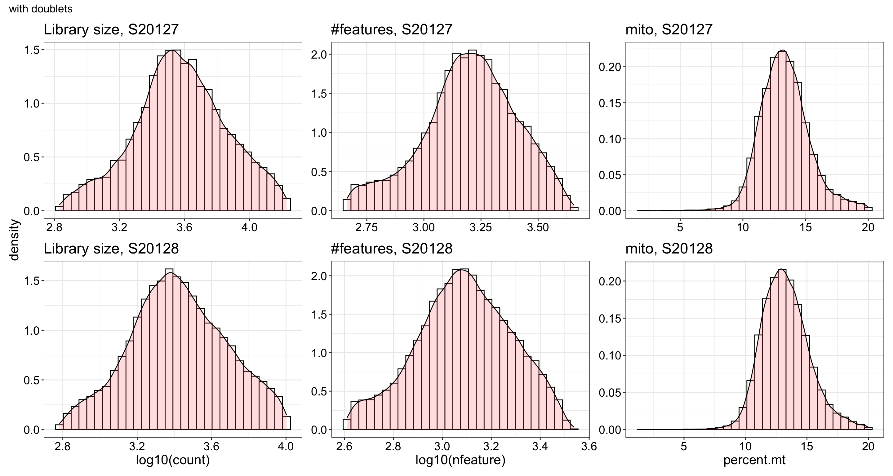
Without doublets
plot_list <- lapply(list_objects[3:4], make_density_plots)
wrap_plots(unlist(plot_list, recursive = F)) + plot_layout(axis_titles = "collect") +plot_annotation(title = "without doublets")`stat_bin()` using `bins = 30`. Pick better value `binwidth`.
`stat_bin()` using `bins = 30`. Pick better value `binwidth`.
`stat_bin()` using `bins = 30`. Pick better value `binwidth`.
`stat_bin()` using `bins = 30`. Pick better value `binwidth`.
`stat_bin()` using `bins = 30`. Pick better value `binwidth`.
`stat_bin()` using `bins = 30`. Pick better value `binwidth`.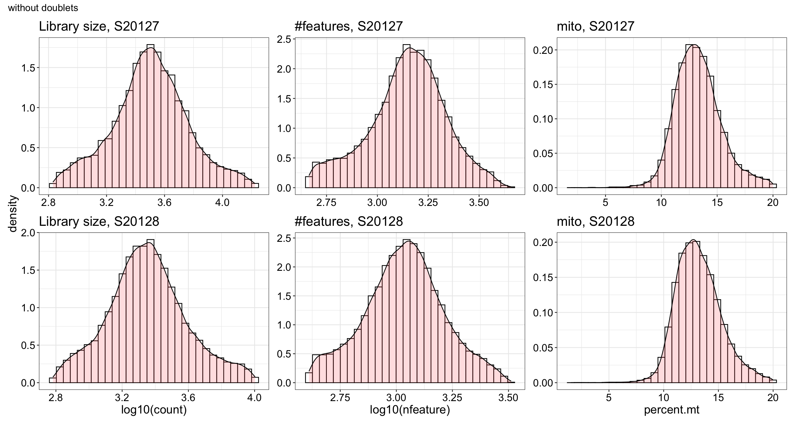
General distribution without doublets looks slightly better.
plot_list <- lapply(list_objects[1:2], make_correlation_plots)
wrap_plots(unlist(plot_list, recursive = F)) +plot_annotation(title = "with doublets")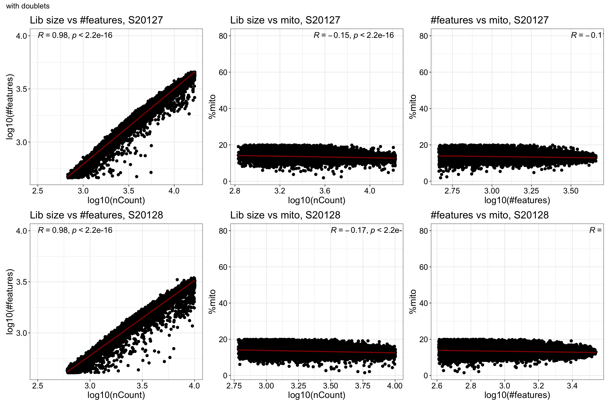
plot_list <- lapply(list_objects[3:4], make_correlation_plots)
wrap_plots(unlist(plot_list, recursive = F)) +plot_annotation(title = "without doublets")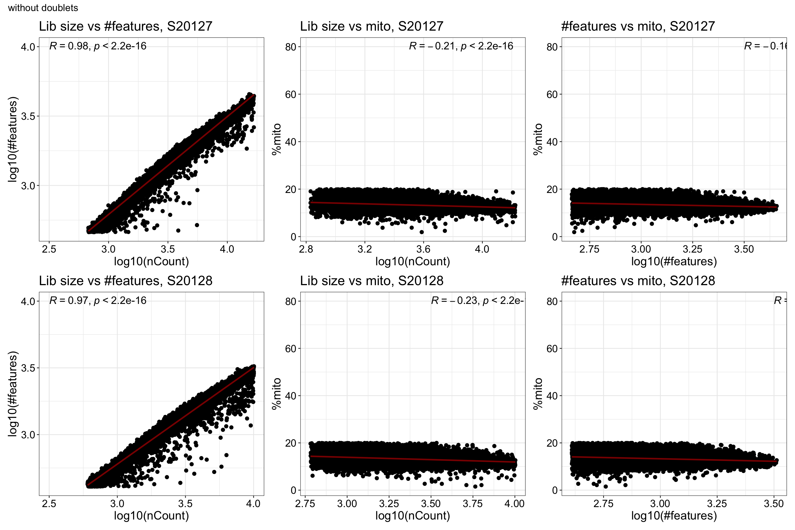
No real differences here.
We’re going to run the workflow on each sample separately (just in case we need it) and on combined objects.
Not using sctransform, regressing out %mito
run_workflow <- function(seurat){
seurat <- NormalizeData(seurat) %>% #should deal with basic library size differences
FindVariableFeatures() %>%
ScaleData(., vars.to.regress = c("percent.mt")) %>%
RunPCA() %>%
RunUMAP(., dims = 1:30) %>% #defaults
FindNeighbors(., dims = 1:30) %>%
FindClusters(., resolution = seq(0.1, 1, 0.1))
}Combine the samples
list_object_combined <- list()
list_object_combined$merged <- merge(list_objects$yap_mutant,
y = list_objects$wt,
project = "Dataset_10025", merge.data = TRUE) Warning: Some cell names are duplicated across objects provided. Renaming to
enforce unique cell names.list_object_combined$merged <- JoinLayers(list_object_combined$merged) #seurat v5 things
list_object_combined$merged_nodoublets <- merge(list_objects$yap_mutant_nodoublets,
y = list_objects$wt_nodoublets,
project = "Dataset_10025", merge.data = TRUE)Warning: Some cell names are duplicated across objects provided. Renaming to
enforce unique cell names.list_object_combined$merged_nodoublets <- JoinLayers(list_object_combined$merged_nodoublets) #seurat v5 thingslist_objects <- lapply(list_objects, run_workflow)Warning: The default method for RunUMAP has changed from calling Python UMAP via reticulate to the R-native UWOT using the cosine metric
To use Python UMAP via reticulate, set umap.method to 'umap-learn' and metric to 'correlation'
This message will be shown once per sessionModularity Optimizer version 1.3.0 by Ludo Waltman and Nees Jan van Eck
Number of nodes: 15967
Number of edges: 591575
Running Louvain algorithm...
Maximum modularity in 10 random starts: 0.9589
Number of communities: 9
Elapsed time: 1 seconds
Modularity Optimizer version 1.3.0 by Ludo Waltman and Nees Jan van Eck
Number of nodes: 15967
Number of edges: 591575
Running Louvain algorithm...
Maximum modularity in 10 random starts: 0.9426
Number of communities: 15
Elapsed time: 1 seconds
Modularity Optimizer version 1.3.0 by Ludo Waltman and Nees Jan van Eck
Number of nodes: 15967
Number of edges: 591575
Running Louvain algorithm...
Maximum modularity in 10 random starts: 0.9320
Number of communities: 17
Elapsed time: 1 seconds
Modularity Optimizer version 1.3.0 by Ludo Waltman and Nees Jan van Eck
Number of nodes: 15967
Number of edges: 591575
Running Louvain algorithm...
Maximum modularity in 10 random starts: 0.9213
Number of communities: 17
Elapsed time: 1 seconds
Modularity Optimizer version 1.3.0 by Ludo Waltman and Nees Jan van Eck
Number of nodes: 15967
Number of edges: 591575
Running Louvain algorithm...
Maximum modularity in 10 random starts: 0.9130
Number of communities: 20
Elapsed time: 1 seconds
Modularity Optimizer version 1.3.0 by Ludo Waltman and Nees Jan van Eck
Number of nodes: 15967
Number of edges: 591575
Running Louvain algorithm...
Maximum modularity in 10 random starts: 0.9052
Number of communities: 23
Elapsed time: 1 seconds
Modularity Optimizer version 1.3.0 by Ludo Waltman and Nees Jan van Eck
Number of nodes: 15967
Number of edges: 591575
Running Louvain algorithm...
Maximum modularity in 10 random starts: 0.8979
Number of communities: 25
Elapsed time: 1 seconds
Modularity Optimizer version 1.3.0 by Ludo Waltman and Nees Jan van Eck
Number of nodes: 15967
Number of edges: 591575
Running Louvain algorithm...
Maximum modularity in 10 random starts: 0.8923
Number of communities: 27
Elapsed time: 1 seconds
Modularity Optimizer version 1.3.0 by Ludo Waltman and Nees Jan van Eck
Number of nodes: 15967
Number of edges: 591575
Running Louvain algorithm...
Maximum modularity in 10 random starts: 0.8869
Number of communities: 28
Elapsed time: 1 seconds
Modularity Optimizer version 1.3.0 by Ludo Waltman and Nees Jan van Eck
Number of nodes: 15967
Number of edges: 591575
Running Louvain algorithm...
Maximum modularity in 10 random starts: 0.8814
Number of communities: 28
Elapsed time: 1 secondsModularity Optimizer version 1.3.0 by Ludo Waltman and Nees Jan van Eck
Number of nodes: 24514
Number of edges: 915039
Running Louvain algorithm...
Maximum modularity in 10 random starts: 0.9639
Number of communities: 10
Elapsed time: 2 seconds
Modularity Optimizer version 1.3.0 by Ludo Waltman and Nees Jan van Eck
Number of nodes: 24514
Number of edges: 915039
Running Louvain algorithm...
Maximum modularity in 10 random starts: 0.9468
Number of communities: 14
Elapsed time: 2 seconds
Modularity Optimizer version 1.3.0 by Ludo Waltman and Nees Jan van Eck
Number of nodes: 24514
Number of edges: 915039
Running Louvain algorithm...
Maximum modularity in 10 random starts: 0.9353
Number of communities: 16
Elapsed time: 2 seconds
Modularity Optimizer version 1.3.0 by Ludo Waltman and Nees Jan van Eck
Number of nodes: 24514
Number of edges: 915039
Running Louvain algorithm...
Maximum modularity in 10 random starts: 0.9249
Number of communities: 18
Elapsed time: 3 seconds
Modularity Optimizer version 1.3.0 by Ludo Waltman and Nees Jan van Eck
Number of nodes: 24514
Number of edges: 915039
Running Louvain algorithm...
Maximum modularity in 10 random starts: 0.9170
Number of communities: 22
Elapsed time: 3 seconds
Modularity Optimizer version 1.3.0 by Ludo Waltman and Nees Jan van Eck
Number of nodes: 24514
Number of edges: 915039
Running Louvain algorithm...
Maximum modularity in 10 random starts: 0.9086
Number of communities: 23
Elapsed time: 3 seconds
Modularity Optimizer version 1.3.0 by Ludo Waltman and Nees Jan van Eck
Number of nodes: 24514
Number of edges: 915039
Running Louvain algorithm...
Maximum modularity in 10 random starts: 0.9021
Number of communities: 28
Elapsed time: 3 seconds
Modularity Optimizer version 1.3.0 by Ludo Waltman and Nees Jan van Eck
Number of nodes: 24514
Number of edges: 915039
Running Louvain algorithm...
Maximum modularity in 10 random starts: 0.8965
Number of communities: 28
Elapsed time: 3 seconds
Modularity Optimizer version 1.3.0 by Ludo Waltman and Nees Jan van Eck
Number of nodes: 24514
Number of edges: 915039
Running Louvain algorithm...
Maximum modularity in 10 random starts: 0.8914
Number of communities: 29
Elapsed time: 2 seconds
Modularity Optimizer version 1.3.0 by Ludo Waltman and Nees Jan van Eck
Number of nodes: 24514
Number of edges: 915039
Running Louvain algorithm...
Maximum modularity in 10 random starts: 0.8860
Number of communities: 29
Elapsed time: 2 secondsModularity Optimizer version 1.3.0 by Ludo Waltman and Nees Jan van Eck
Number of nodes: 12430
Number of edges: 469411
Running Louvain algorithm...
Maximum modularity in 10 random starts: 0.9636
Number of communities: 10
Elapsed time: 1 seconds
Modularity Optimizer version 1.3.0 by Ludo Waltman and Nees Jan van Eck
Number of nodes: 12430
Number of edges: 469411
Running Louvain algorithm...
Maximum modularity in 10 random starts: 0.9481
Number of communities: 14
Elapsed time: 1 seconds
Modularity Optimizer version 1.3.0 by Ludo Waltman and Nees Jan van Eck
Number of nodes: 12430
Number of edges: 469411
Running Louvain algorithm...
Maximum modularity in 10 random starts: 0.9374
Number of communities: 17
Elapsed time: 1 seconds
Modularity Optimizer version 1.3.0 by Ludo Waltman and Nees Jan van Eck
Number of nodes: 12430
Number of edges: 469411
Running Louvain algorithm...
Maximum modularity in 10 random starts: 0.9269
Number of communities: 17
Elapsed time: 1 seconds
Modularity Optimizer version 1.3.0 by Ludo Waltman and Nees Jan van Eck
Number of nodes: 12430
Number of edges: 469411
Running Louvain algorithm...
Maximum modularity in 10 random starts: 0.9184
Number of communities: 21
Elapsed time: 1 seconds
Modularity Optimizer version 1.3.0 by Ludo Waltman and Nees Jan van Eck
Number of nodes: 12430
Number of edges: 469411
Running Louvain algorithm...
Maximum modularity in 10 random starts: 0.9104
Number of communities: 23
Elapsed time: 1 seconds
Modularity Optimizer version 1.3.0 by Ludo Waltman and Nees Jan van Eck
Number of nodes: 12430
Number of edges: 469411
Running Louvain algorithm...
Maximum modularity in 10 random starts: 0.9043
Number of communities: 26
Elapsed time: 1 seconds
Modularity Optimizer version 1.3.0 by Ludo Waltman and Nees Jan van Eck
Number of nodes: 12430
Number of edges: 469411
Running Louvain algorithm...
Maximum modularity in 10 random starts: 0.8991
Number of communities: 28
Elapsed time: 1 seconds
Modularity Optimizer version 1.3.0 by Ludo Waltman and Nees Jan van Eck
Number of nodes: 12430
Number of edges: 469411
Running Louvain algorithm...
Maximum modularity in 10 random starts: 0.8933
Number of communities: 28
Elapsed time: 1 seconds
Modularity Optimizer version 1.3.0 by Ludo Waltman and Nees Jan van Eck
Number of nodes: 12430
Number of edges: 469411
Running Louvain algorithm...
Maximum modularity in 10 random starts: 0.8872
Number of communities: 28
Elapsed time: 1 secondsModularity Optimizer version 1.3.0 by Ludo Waltman and Nees Jan van Eck
Number of nodes: 18985
Number of edges: 728234
Running Louvain algorithm...
Maximum modularity in 10 random starts: 0.9667
Number of communities: 11
Elapsed time: 2 seconds
Modularity Optimizer version 1.3.0 by Ludo Waltman and Nees Jan van Eck
Number of nodes: 18985
Number of edges: 728234
Running Louvain algorithm...
Maximum modularity in 10 random starts: 0.9502
Number of communities: 15
Elapsed time: 2 seconds
Modularity Optimizer version 1.3.0 by Ludo Waltman and Nees Jan van Eck
Number of nodes: 18985
Number of edges: 728234
Running Louvain algorithm...
Maximum modularity in 10 random starts: 0.9381
Number of communities: 18
Elapsed time: 2 seconds
Modularity Optimizer version 1.3.0 by Ludo Waltman and Nees Jan van Eck
Number of nodes: 18985
Number of edges: 728234
Running Louvain algorithm...
Maximum modularity in 10 random starts: 0.9286
Number of communities: 20
Elapsed time: 2 seconds
Modularity Optimizer version 1.3.0 by Ludo Waltman and Nees Jan van Eck
Number of nodes: 18985
Number of edges: 728234
Running Louvain algorithm...
Maximum modularity in 10 random starts: 0.9206
Number of communities: 23
Elapsed time: 2 seconds
Modularity Optimizer version 1.3.0 by Ludo Waltman and Nees Jan van Eck
Number of nodes: 18985
Number of edges: 728234
Running Louvain algorithm...
Maximum modularity in 10 random starts: 0.9137
Number of communities: 25
Elapsed time: 2 seconds
Modularity Optimizer version 1.3.0 by Ludo Waltman and Nees Jan van Eck
Number of nodes: 18985
Number of edges: 728234
Running Louvain algorithm...
Maximum modularity in 10 random starts: 0.9071
Number of communities: 26
Elapsed time: 2 seconds
Modularity Optimizer version 1.3.0 by Ludo Waltman and Nees Jan van Eck
Number of nodes: 18985
Number of edges: 728234
Running Louvain algorithm...
Maximum modularity in 10 random starts: 0.9011
Number of communities: 28
Elapsed time: 2 seconds
Modularity Optimizer version 1.3.0 by Ludo Waltman and Nees Jan van Eck
Number of nodes: 18985
Number of edges: 728234
Running Louvain algorithm...
Maximum modularity in 10 random starts: 0.8951
Number of communities: 28
Elapsed time: 2 seconds
Modularity Optimizer version 1.3.0 by Ludo Waltman and Nees Jan van Eck
Number of nodes: 18985
Number of edges: 728234
Running Louvain algorithm...
Maximum modularity in 10 random starts: 0.8894
Number of communities: 28
Elapsed time: 1 secondslist_object_combined <- lapply(list_object_combined, run_workflow)Modularity Optimizer version 1.3.0 by Ludo Waltman and Nees Jan van Eck
Number of nodes: 40481
Number of edges: 1498673
Running Louvain algorithm...
Maximum modularity in 10 random starts: 0.9646
Number of communities: 12
Elapsed time: 6 secondsModularity Optimizer version 1.3.0 by Ludo Waltman and Nees Jan van Eck
Number of nodes: 40481
Number of edges: 1498673
Running Louvain algorithm...
Maximum modularity in 10 random starts: 0.9498
Number of communities: 15
Elapsed time: 6 secondsModularity Optimizer version 1.3.0 by Ludo Waltman and Nees Jan van Eck
Number of nodes: 40481
Number of edges: 1498673
Running Louvain algorithm...
Maximum modularity in 10 random starts: 0.9393
Number of communities: 19
Elapsed time: 7 secondsModularity Optimizer version 1.3.0 by Ludo Waltman and Nees Jan van Eck
Number of nodes: 40481
Number of edges: 1498673
Running Louvain algorithm...
Maximum modularity in 10 random starts: 0.9299
Number of communities: 22
Elapsed time: 6 secondsModularity Optimizer version 1.3.0 by Ludo Waltman and Nees Jan van Eck
Number of nodes: 40481
Number of edges: 1498673
Running Louvain algorithm...
Maximum modularity in 10 random starts: 0.9217
Number of communities: 23
Elapsed time: 6 secondsModularity Optimizer version 1.3.0 by Ludo Waltman and Nees Jan van Eck
Number of nodes: 40481
Number of edges: 1498673
Running Louvain algorithm...
Maximum modularity in 10 random starts: 0.9153
Number of communities: 28
Elapsed time: 6 secondsModularity Optimizer version 1.3.0 by Ludo Waltman and Nees Jan van Eck
Number of nodes: 40481
Number of edges: 1498673
Running Louvain algorithm...
Maximum modularity in 10 random starts: 0.9096
Number of communities: 30
Elapsed time: 6 secondsModularity Optimizer version 1.3.0 by Ludo Waltman and Nees Jan van Eck
Number of nodes: 40481
Number of edges: 1498673
Running Louvain algorithm...
Maximum modularity in 10 random starts: 0.9043
Number of communities: 31
Elapsed time: 6 secondsModularity Optimizer version 1.3.0 by Ludo Waltman and Nees Jan van Eck
Number of nodes: 40481
Number of edges: 1498673
Running Louvain algorithm...
Maximum modularity in 10 random starts: 0.8991
Number of communities: 32
Elapsed time: 6 secondsModularity Optimizer version 1.3.0 by Ludo Waltman and Nees Jan van Eck
Number of nodes: 40481
Number of edges: 1498673
Running Louvain algorithm...
Maximum modularity in 10 random starts: 0.8944
Number of communities: 33
Elapsed time: 6 secondsModularity Optimizer version 1.3.0 by Ludo Waltman and Nees Jan van Eck
Number of nodes: 31415
Number of edges: 1197928
Running Louvain algorithm...
Maximum modularity in 10 random starts: 0.9677
Number of communities: 12
Elapsed time: 5 seconds
Modularity Optimizer version 1.3.0 by Ludo Waltman and Nees Jan van Eck
Number of nodes: 31415
Number of edges: 1197928
Running Louvain algorithm...
Maximum modularity in 10 random starts: 0.9538
Number of communities: 14
Elapsed time: 5 seconds
Modularity Optimizer version 1.3.0 by Ludo Waltman and Nees Jan van Eck
Number of nodes: 31415
Number of edges: 1197928
Running Louvain algorithm...
Maximum modularity in 10 random starts: 0.9434
Number of communities: 18
Elapsed time: 5 seconds
Modularity Optimizer version 1.3.0 by Ludo Waltman and Nees Jan van Eck
Number of nodes: 31415
Number of edges: 1197928
Running Louvain algorithm...
Maximum modularity in 10 random starts: 0.9338
Number of communities: 21
Elapsed time: 5 seconds
Modularity Optimizer version 1.3.0 by Ludo Waltman and Nees Jan van Eck
Number of nodes: 31415
Number of edges: 1197928
Running Louvain algorithm...
Maximum modularity in 10 random starts: 0.9255
Number of communities: 23
Elapsed time: 4 seconds
Modularity Optimizer version 1.3.0 by Ludo Waltman and Nees Jan van Eck
Number of nodes: 31415
Number of edges: 1197928
Running Louvain algorithm...
Maximum modularity in 10 random starts: 0.9183
Number of communities: 24
Elapsed time: 4 seconds
Modularity Optimizer version 1.3.0 by Ludo Waltman and Nees Jan van Eck
Number of nodes: 31415
Number of edges: 1197928
Running Louvain algorithm...
Maximum modularity in 10 random starts: 0.9129
Number of communities: 29
Elapsed time: 5 seconds
Modularity Optimizer version 1.3.0 by Ludo Waltman and Nees Jan van Eck
Number of nodes: 31415
Number of edges: 1197928
Running Louvain algorithm...
Maximum modularity in 10 random starts: 0.9071
Number of communities: 30
Elapsed time: 4 seconds
Modularity Optimizer version 1.3.0 by Ludo Waltman and Nees Jan van Eck
Number of nodes: 31415
Number of edges: 1197928
Running Louvain algorithm...
Maximum modularity in 10 random starts: 0.9024
Number of communities: 29
Elapsed time: 5 seconds
Modularity Optimizer version 1.3.0 by Ludo Waltman and Nees Jan van Eck
Number of nodes: 31415
Number of edges: 1197928
Running Louvain algorithm...
Maximum modularity in 10 random starts: 0.8972
Number of communities: 30
Elapsed time: 5 secondsrun_pca_correlations <- function(seurat){
plot_list <- list()
meta <- seurat@meta.data %>%
mutate(., log10ncount = log10(nCount_RNA),
log10nfeat = log10(nFeature_RNA)) %>%
select(., log10ncount, log10nfeat) %>%
rownames_to_column("Barcode") %>%
full_join(., seurat@reductions$pca@cell.embeddings %>% as.data.frame() %>% rownames_to_column("Barcode") %>% select(., Barcode, PC_1, PC_2,PC_3))
#ncount
plot_list[[1]] <- ggscatter(meta, x = "PC_1", y = "log10ncount",
add = "reg.line",
conf.int = TRUE,
add.params = list(color = "red4",
fill = "lightgray")) +
plot_sizing + ylab("log10(nCount)") + xlab("PC1") +
stat_cor(method = "pearson", size = 5, colour = "red4") +
ggtitle(sprintf("PC1 vs library size, %s", seurat@project.name))
#nfeat
plot_list[[2]] <- ggscatter(meta, x = "PC_2", y = "log10ncount",
add = "reg.line",
conf.int = TRUE,
add.params = list(color = "red4",
fill = "lightgray")) +
plot_sizing + ylab("log10(nCount)") + xlab("PC1") +
stat_cor(method = "pearson", size = 5, colour = "red4") +
ggtitle(sprintf("PC2 vs library size, %s", seurat@project.name))
#mito
plot_list[[3]] <- ggscatter(meta, x = "PC_3", y = "log10ncount",
add = "reg.line",
conf.int = TRUE,
add.params = list(color = "red4",
fill = "lightgray")) +
plot_sizing + ylab("log10(nCount)") + xlab("PC1") +
stat_cor(method = "pearson", size = 5, colour = "red4") +
ggtitle(sprintf("PC3 vs library size, %s", seurat@project.name))
return(plot_list)
}plot_list <- lapply(list_objects[1:2], run_pca_correlations)Joining with `by = join_by(Barcode)`
Joining with `by = join_by(Barcode)`wrap_plots(unlist(plot_list, recursive = F)) +plot_annotation(title = "with doublets")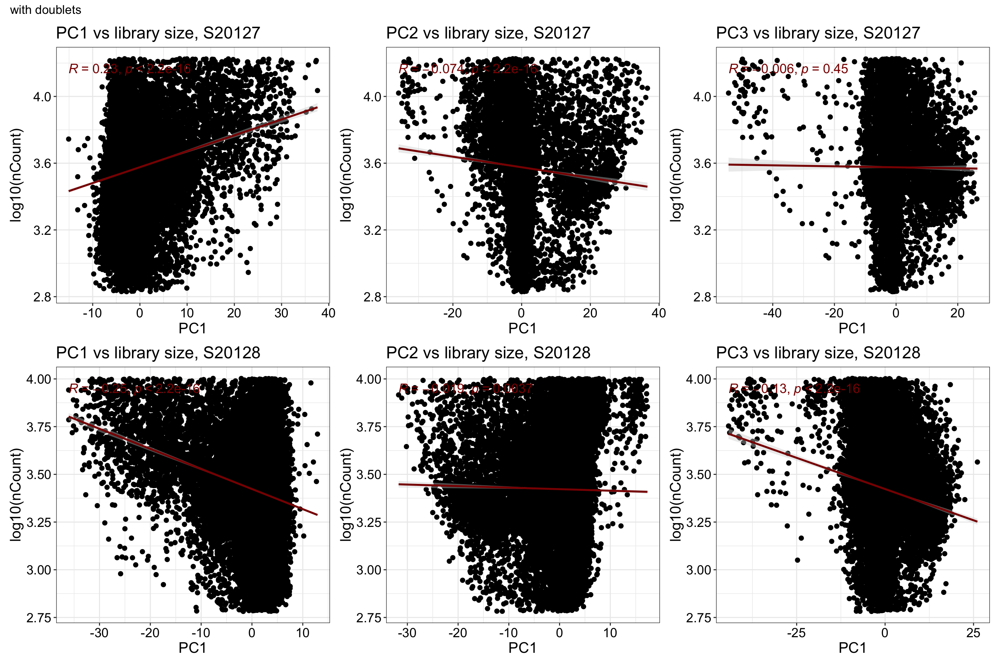
Combined (top with, bottom without doublets):
plot_list <- lapply(list_object_combined, run_pca_correlations)Joining with `by = join_by(Barcode)`
Joining with `by = join_by(Barcode)`wrap_plots(unlist(plot_list, recursive = F)) +plot_annotation(title = "with doublets")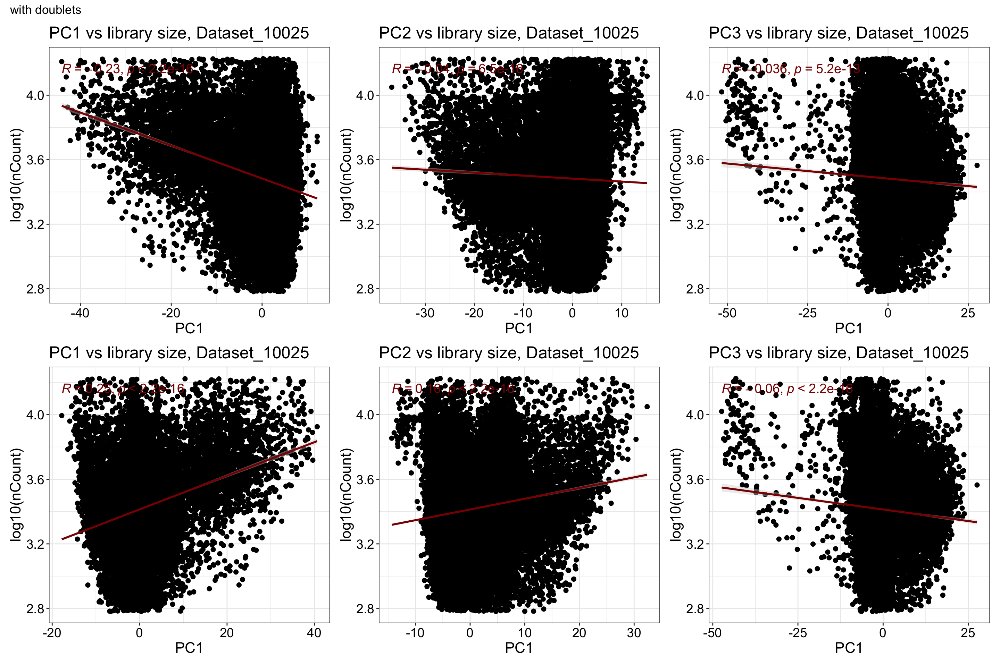
No bias.
Not that much to see, only make UMAPs for nfeature, ncount and seurat_cluster.
plot_umap_sample <- function(seurat){
plot_list <- list()
plot_list[[1]] <- FeaturePlot(seurat, features = c("nCount_RNA")) + ggtitle(seurat@project.name)
plot_list[[2]] <- FeaturePlot(seurat, features = c("nFeature_RNA")) + ggtitle(seurat@project.name)
plot_list[[3]] <- DimPlot(seurat, group.by = c("seurat_clusters")) + ggtitle(seurat@project.name)
return(plot_list)
}plot_list <- lapply(list_objects[1:2], plot_umap_sample)
wrap_plots(unlist(plot_list, recursive = F)) +plot_annotation(title = "with doublets")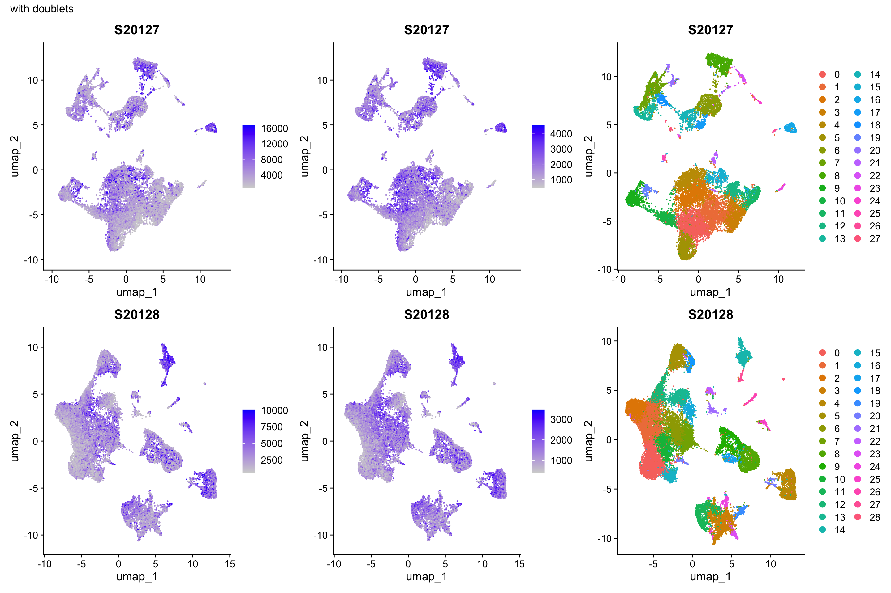
plot_list <- lapply(list_objects[3:4], plot_umap_sample)
wrap_plots(unlist(plot_list, recursive = F)) +plot_annotation(title = "without doublets")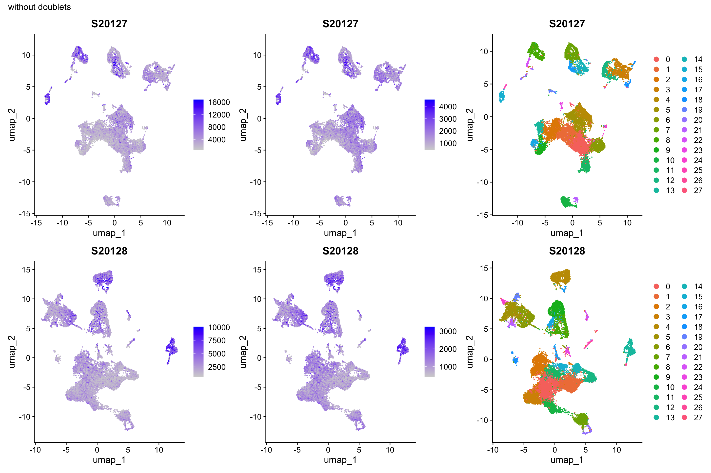
Not that much to see, only make UMAPs for nfeature, ncount and seurat_cluster.
plot_umap_dataset <- function(seurat){
plot_list <- list()
plot_list[[1]] <- FeaturePlot(seurat, features = c("nCount_RNA")) + ggtitle(seurat@project.name)
plot_list[[2]] <- FeaturePlot(seurat, features = c("nFeature_RNA")) + ggtitle(seurat@project.name)
plot_list[[3]] <- DimPlot(seurat, group.by = c("seurat_clusters")) + ggtitle(seurat@project.name)
plot_list[[4]] <- DimPlot(seurat, group.by = c("Genotype"), shuffle = T) + ggtitle(seurat@project.name)
return(plot_list)
}Top with, bottom without doublets.
plot_list <- lapply(list_object_combined, plot_umap_dataset)
wrap_plots(unlist(plot_list, recursive = F)) +plot_annotation(title = "without doublets") + plot_layout(nrow = 2)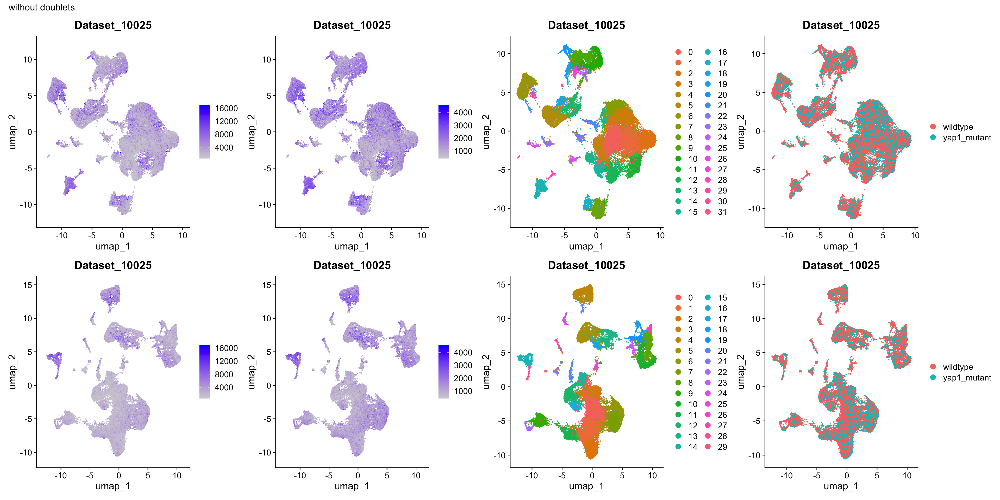
Quick overview of endothelial cell genes.
run_umap_genes <- function(seurat, genes = c("cdh5", "kdrl", "cdh6", "prox1a")){
p <- FeaturePlot(seurat, features = genes)
p + plot_annotation(title = seurat@project.name)
}With doublets
lapply(list_objects[1:2], run_umap_genes)$yap_mutant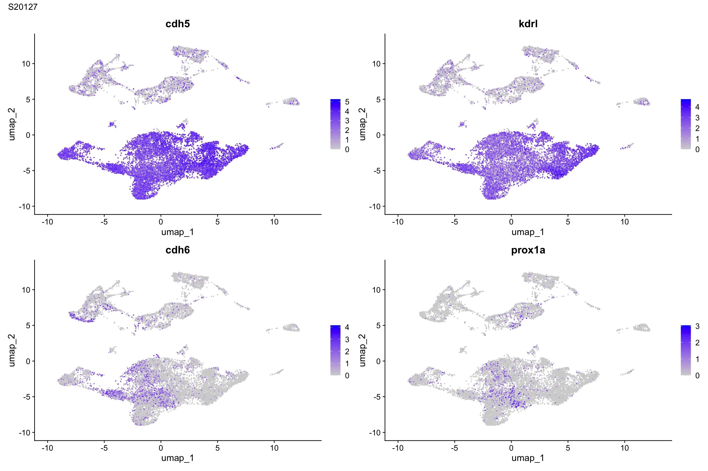
$wt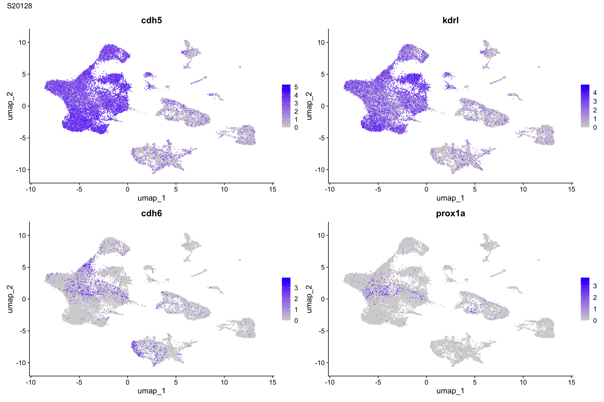
Without doublets
lapply(list_objects[3:4], run_umap_genes)$yap_mutant_nodoublets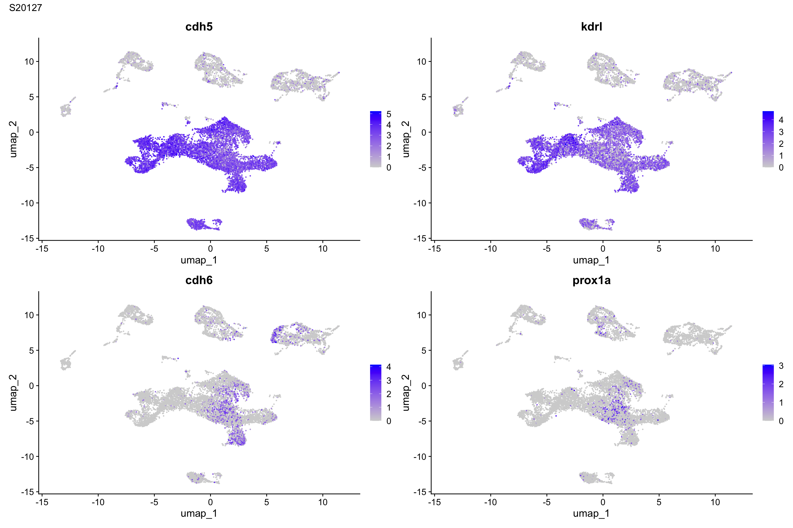
$wt_nodoublets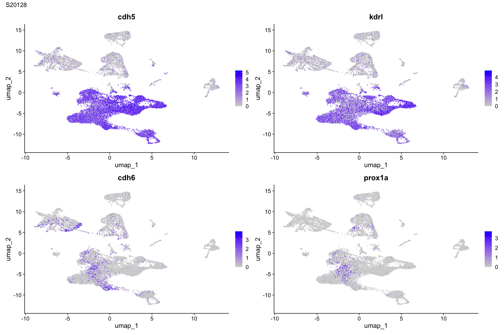
With doublets:
run_umap_genes(list_object_combined$merged)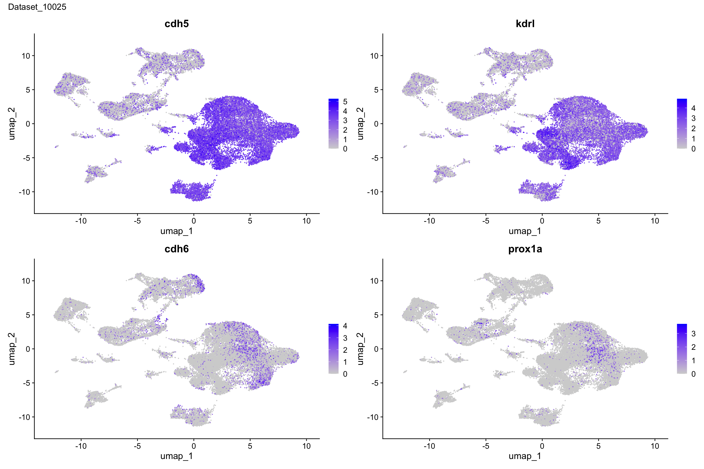
Without doublets:
run_umap_genes(list_object_combined$merged_nodoublets)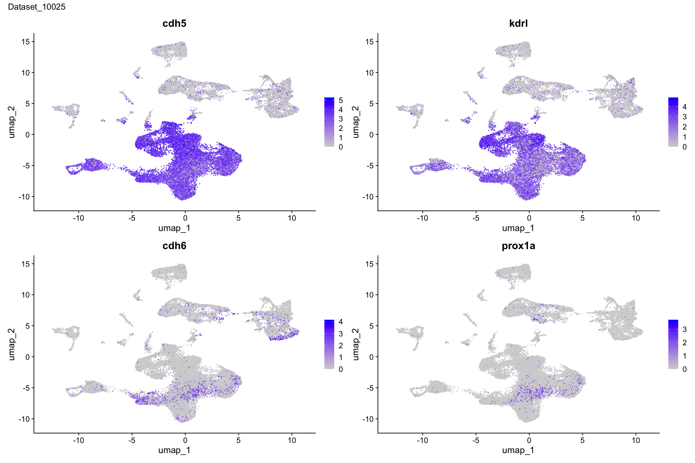
Export them all.
#dataset
file_name <- here('output/data/Datsets/D10025_yap1_dataset/D10025_yap1_dataset_Level_01.qs2')
qs_save(list_object_combined$merged_nodoublets, file_name)
file_name <- here('output/data/Datsets/D10025_yap1_dataset/D10025_yap1_dataset_Level_01_kept_doublets.qs2')
qs_save(list_object_combined$merged, file_name)
#samples
file_name <- here('output/data/Samples/S20127/S20127_yap1_mutant_Level_01.qs2')
qs_save(list_objects$yap_mutant_nodoublets, file_name)
file_name <- here('output/data/Samples/S20127/S20127_yap1_mutant_Level_01_kept_doublets.qs2')
qs_save(list_objects$yap_mutant, file_name)
file_name <- here('output/data/Samples/S20128/S20128_wildtype_Level_01.qs2')
qs_save(list_objects$wt_nodoublets, file_name)
file_name <- here('output/data/Samples/S20128/S20128_wildtype_Level_01_kept_doublets.qs2')
qs_save(list_objects$wt, file_name)
sessionInfo()R version 4.5.0 (2025-04-11)
Platform: aarch64-apple-darwin20
Running under: macOS Sequoia 15.7.3
Matrix products: default
BLAS: /Library/Frameworks/R.framework/Versions/4.5-arm64/Resources/lib/libRblas.0.dylib
LAPACK: /Library/Frameworks/R.framework/Versions/4.5-arm64/Resources/lib/libRlapack.dylib; LAPACK version 3.12.1
locale:
[1] en_US.UTF-8/en_US.UTF-8/en_US.UTF-8/C/en_US.UTF-8/en_US.UTF-8
time zone: Australia/Melbourne
tzcode source: internal
attached base packages:
[1] stats4 stats graphics grDevices datasets utils methods
[8] base
other attached packages:
[1] future_1.69.0 qs2_0.1.7
[3] scran_1.38.0 scater_1.38.0
[5] scuttle_1.20.0 patchwork_1.3.2
[7] clustree_0.5.1 ggraph_2.2.2
[9] ggpubr_0.6.2 scDblFinder_1.24.0
[11] SingleCellExperiment_1.32.0 SummarizedExperiment_1.40.0
[13] Biobase_2.70.0 GenomicRanges_1.62.1
[15] Seqinfo_1.0.0 IRanges_2.44.0
[17] S4Vectors_0.48.0 BiocGenerics_0.56.0
[19] generics_0.1.4 MatrixGenerics_1.22.0
[21] matrixStats_1.5.0 Seurat_5.4.0
[23] SeuratObject_5.3.0 sp_2.2-0
[25] here_1.0.2 lubridate_1.9.4
[27] forcats_1.0.1 stringr_1.5.1
[29] dplyr_1.1.4 purrr_1.2.1
[31] readr_2.1.6 tidyr_1.3.2
[33] tibble_3.3.1 ggplot2_4.0.1
[35] tidyverse_2.0.0 workflowr_1.7.1
loaded via a namespace (and not attached):
[1] fs_1.6.6 spatstat.sparse_3.1-0 bitops_1.0-9
[4] httr_1.4.7 RColorBrewer_1.1-3 tools_4.5.0
[7] sctransform_0.4.3 backports_1.5.0 R6_2.6.1
[10] mgcv_1.9-1 lazyeval_0.2.2 uwot_0.2.4
[13] withr_3.0.2 gridExtra_2.3 progressr_0.18.0
[16] cli_3.6.5 spatstat.explore_3.7-0 fastDummies_1.7.5
[19] labeling_0.4.3 sass_0.4.10 S7_0.2.1
[22] spatstat.data_3.1-9 ggridges_0.5.7 pbapply_1.7-4
[25] Rsamtools_2.26.0 parallelly_1.46.1 limma_3.66.0
[28] rstudioapi_0.17.1 BiocIO_1.20.0 ica_1.0-3
[31] spatstat.random_3.4-4 car_3.1-3 Matrix_1.7-3
[34] ggbeeswarm_0.7.3 abind_1.4-8 lifecycle_1.0.4
[37] whisker_0.4.1 yaml_2.3.10 edgeR_4.8.2
[40] carData_3.0-5 SparseArray_1.10.8 Rtsne_0.17
[43] grid_4.5.0 promises_1.5.0 dqrng_0.4.1
[46] crayon_1.5.3 miniUI_0.1.2 lattice_0.22-6
[49] beachmat_2.26.0 cowplot_1.2.0 cigarillo_1.0.0
[52] pillar_1.11.1 knitr_1.50 metapod_1.18.0
[55] rjson_0.2.23 xgboost_3.1.3.1 future.apply_1.20.1
[58] codetools_0.2-20 glue_1.8.0 getPass_0.2-4
[61] spatstat.univar_3.1-6 data.table_1.18.0 vctrs_0.6.5
[64] png_0.1-8 spam_2.11-3 gtable_0.3.6
[67] cachem_1.1.0 xfun_0.52 S4Arrays_1.10.1
[70] mime_0.13 tidygraph_1.3.1 survival_3.8-3
[73] statmod_1.5.1 bluster_1.20.0 fitdistrplus_1.2-5
[76] ROCR_1.0-11 nlme_3.1-168 RcppAnnoy_0.0.23
[79] GenomeInfoDb_1.46.2 rprojroot_2.1.1 bslib_0.9.0
[82] irlba_2.3.5.1 vipor_0.4.7 KernSmooth_2.23-26
[85] otel_0.2.0 tidyselect_1.2.1 processx_3.8.6
[88] compiler_4.5.0 curl_6.2.2 git2r_0.36.2
[91] BiocNeighbors_2.4.0 DelayedArray_0.36.0 plotly_4.11.0
[94] stringfish_0.18.0 rtracklayer_1.70.1 scales_1.4.0
[97] lmtest_0.9-40 callr_3.7.6 digest_0.6.37
[100] goftest_1.2-3 spatstat.utils_3.2-1 rmarkdown_2.29
[103] XVector_0.50.0 htmltools_0.5.8.1 pkgconfig_2.0.3
[106] fastmap_1.2.0 rlang_1.1.6 htmlwidgets_1.6.4
[109] UCSC.utils_1.6.1 shiny_1.12.1 farver_2.1.2
[112] jquerylib_0.1.4 zoo_1.8-15 jsonlite_2.0.0
[115] BiocParallel_1.44.0 BiocSingular_1.26.1 RCurl_1.98-1.17
[118] magrittr_2.0.3 Formula_1.2-5 dotCall64_1.2
[121] Rcpp_1.0.14 viridis_0.6.5 reticulate_1.44.1
[124] stringi_1.8.7 MASS_7.3-65 plyr_1.8.9
[127] parallel_4.5.0 listenv_0.10.0 ggrepel_0.9.6
[130] deldir_2.0-4 graphlayouts_1.2.2 Biostrings_2.78.0
[133] splines_4.5.0 tensor_1.5.1 hms_1.1.4
[136] locfit_1.5-9.12 ps_1.9.1 igraph_2.2.1
[139] spatstat.geom_3.7-0 ggsignif_0.6.4 RcppHNSW_0.6.0
[142] reshape2_1.4.5 ScaledMatrix_1.18.0 XML_3.99-0.20
[145] evaluate_1.0.3 RcppParallel_5.1.11-1 renv_1.1.4
[148] BiocManager_1.30.27 tweenr_2.0.3 tzdb_0.5.0
[151] httpuv_1.6.16 RANN_2.6.2 polyclip_1.10-7
[154] scattermore_1.2 ggforce_0.5.0 rsvd_1.0.5
[157] broom_1.0.11 xtable_1.8-4 restfulr_0.0.16
[160] RSpectra_0.16-2 rstatix_0.7.3 later_1.4.2
[163] viridisLite_0.4.2 memoise_2.0.1 beeswarm_0.4.0
[166] GenomicAlignments_1.46.0 cluster_2.1.8.1 timechange_0.3.0
[169] globals_0.18.0